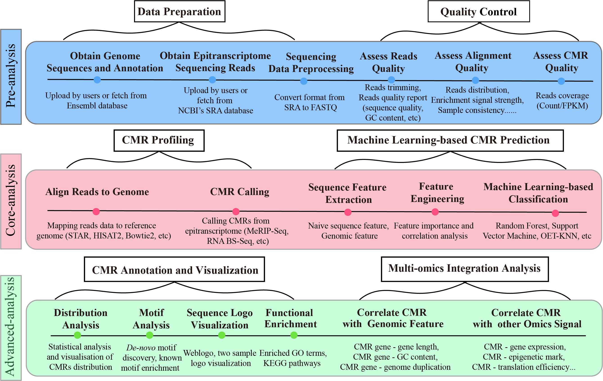
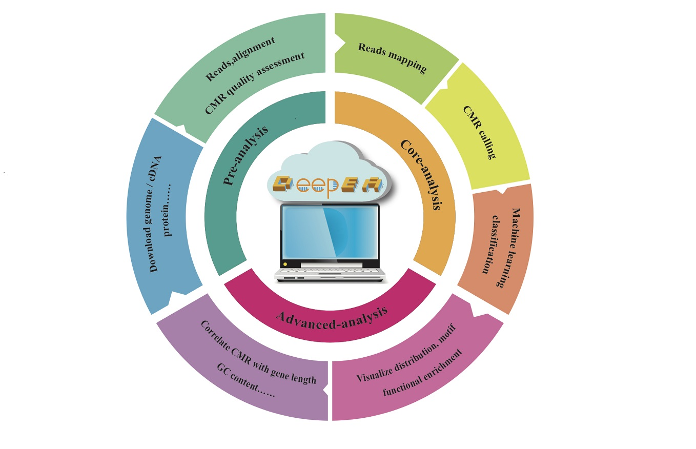
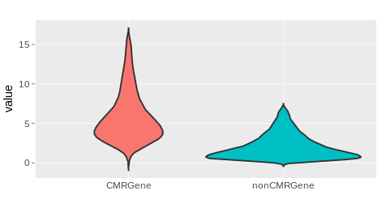
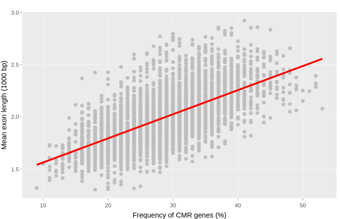
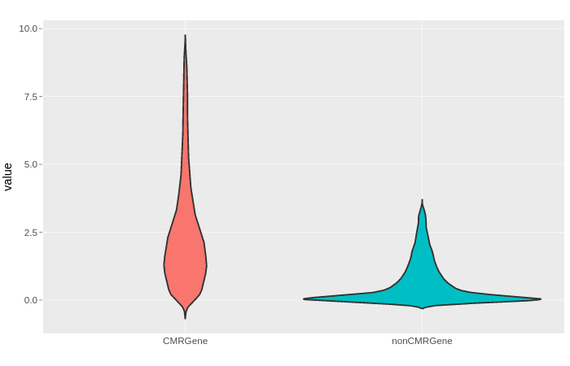
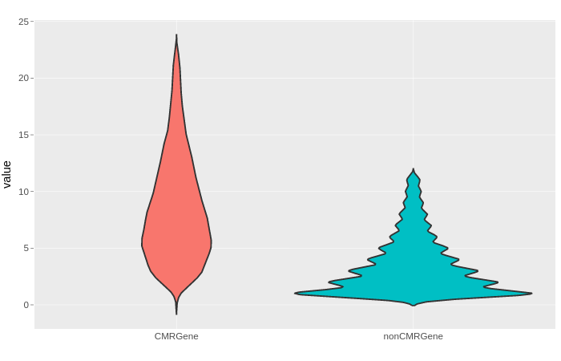
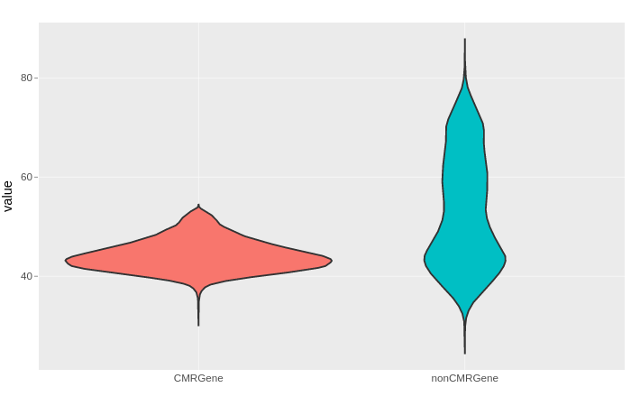

About
DeepEA is a Galaxy-based platform for exploring epitranscriptome sequencing. Currently it integrated a suit of tools required for epitranscriptome analysis including Data Preparation, Quality Control, CMR (chemical modifications of RNA) profiling and analysis, Machine learning-based CMR prediction, CMR annotation and visualization and multi-Omics integration analysis. DeepEA provided an easy-to-use interface and detailed description to help researchers without any programming background to analyze epitranscriptome sequencing data easily. DeepEA project is hosted on https://github.com/cma2015/DeepEA. The DeepEA demo server can be accessed via https://deepea.nwafu.edu.cn.
-

Functions in DeepEA
-

DeepEA logo
Table of Contents
Installation
Docker installation
Official installation tutorial is available at here
For Windows (Test on Windows 10 Enterprise version):
- Download Docker for windows;
- Double click the EXE file to open it;
- Follow the wizard instruction and complete installation;
- Search docker, select Docker for Windows in the search results and clickit.
For Mac OS X (Test on macOS Sierra version 10.12.6 and macOS High Sierra version 10.13.3):
- Download Docker for Mac OS X
- Double click the DMG file to open it;
- Drag the docker into Applications and complete installation;
- Start docker from Launchpad by click it.
For Ubuntu (Test on Ubuntu 16.04 LTS):
# Update the apt package index:
sudo apt-get update
# Install packages to allow apt to use a repository over HTTPS:
sudo apt-get install \
apt-transport-https \
ca-certificates \
curl \
software-properties-common
# Add Docker’s official GPG key
curl -fsSL https://download.docker.com/linux/ubuntu/gpg | sudo apt-key add -
sudo apt-key fingerprint 0EBFCD88
sudo add-apt-repository \
"deb [arch=amd64] https://download.docker.com/linux/ubuntu \
$(lsb_release -cs) \
stable"
sudo apt-get update
sudo apt-get install docker-
# Verify that Docker CE is installed correctly by running the hello-world image
sudo docker run hello-world
Verify if Docker is installed correctly
Once Docker installation is completed, we can run hello-world image to verify if Docker is installed correctly. Open terminal in Mac OS X and Linux operating system and open CMD for Windows operating system, then type the following command:
$ docker run hello-world

Note: root permission is required for Linux operating system, if you want to manage docker as a non-root user, please refer here
DeepEA quick start
DeepEA has been packaged into a docker image, which can be easily installed as a local server by following command. See following video to see how to install DeepEA locally.
# pull DeepEA from docker hub
docker pull malab/deepea
docker run -it -p 8080:80 malab/deepea /bin/zsh
bash /home/DeepEA_v2/galaxy/run.sh
Then DeepEA local server can be accessed via https://localhost:8080
How to upload data
See following video to see how to upload data into DeepEA server.
Browser compatibility
DeepEA has been tested in following OS versions and browsers
| OS | Version | Chrome | Firefox | Microsoft Edge | Safari |
| Linux | Ubuntu 18.04 | √ | √ | n/a | n/a |
| MacOS | Mojave | √ | √ | n/a | √ |
| Windows | 10 | √ | √ | √ | n/a |
Pre-analysis
Pre-analysis module is composed of two sub-modules: Data Preparation and Quality Control. These two sub-modules make up the important components of Epitranscriptome.
Data Preparation
This sub-module provides three funcitons (see following table for details) to prepare epitranscriptome data.
| Tools | Description | Input | Output | Time (test data) | Reference |
| Obtain Genome Sequences and Annotation | Fetch genome, cDNA, CDS sequences and annotation from Enseml automatically | Select an Ensembl database; Select a species; Select dada type | FASTA format sequences or GTF annotation | Depends on the network speed | In-house scripts |
| Obtain Epitranscriptome Sequencing and Reads | Fetch epitranscriptome sequencing reads from NCBI's SRA database | SRR accession or HTTP/FTP link | Sequencing files in SRA/FASTQ format | Depends on the network speed | SRA Toolkit |
| Sequence Data Preprocessing | Convert SRA to FASTQ | Sequences file in SRA format | Sequences file in FASTQ format | ~2 mins | SRA Toolkit |
Quality Control
Quality Control submodule consisted of a suite of tools focused on different levels of quality assessment including reads quality, alignment quality and CMR quality, Thus, three functions are implemented including Assess Reads Quality, Assess Alignment Quality and Assess CMR quality. The details of as follows:
| Tool | Description | Main functions | Input | Output | Time (test data) | Programs | Reference |
| Assess Reads Quality | This tool integrates FastQC and fastp to perform quality control from raw epitranscriptome sequencing reads | Reads trimming and generate reads quality report including sequence quality, GC content, etc | Sequencing reads in FASTQ format | Clean reads or reads quality report in HTML format | ~40s | FastQC,fastp | Chen et al., 2018, Bioinformatics, Babraham Bioinformatics |
| Assess Alignment Quality | This function is used to generate quality assessment. | Evaluate alignment quality | Reads alignment fies in SAM/BAM format | Alignment quality report in HTML format | ~1 min | trumpet | Zhang et al., 2018, BMC Bioinformatics |
| Assess CMR Quality | This tool aims to quantify CMR signal strength by counting reads and calculating RPKM in binding site intervals | Quantify CMRs | Alignments in SAM/BAM format | CMR quantification matrix | ~1 min | DiffBind | Wu et al., 2016, frontiers in Genetics |
Core-analysis
Core-analysis module consists of CMR Profiling and Machine Learning-based CMR Prediction, of which CMR Profiling provides step-by-step functions required for epitranscriptome reads mapping, CMR Calling and differential CMR analysis, while Machine Learning-based CMR Prediction is designed to automatically complete the three main steps for constructing a CMR predictor including Sequence Feature Extraction, Feature Engineering and Machine Learning-based Classification
Align Reads to Genome
Several commonly used aligners are wrapped to align epitranscriptome reads to genome. Currently, Tophat2, Bowtie2, STAR, HISAT2 and bwa-mem are available.
| Tools | Description | Input | Output | Time (test data) | Reference |
| Tophat2 | Accurate alignment of transcriptomes in the presence of insertions, deletions and gene fusions | Sequencing reads in FASTQ format | Alignments in SAM/BAM format | ~50s | Kim et al., 2013, Genome Biology |
| Bowtie2 | A fast gapped-read alignment tool | ~10 s | Langmead et al., 2012, Nature Methods | ||
| STAR | An ultrafast universal RNA-seq aligner | ~16s | Dobin et al., 2013, Bioinformatics | ||
| HISAT2 | A fast spliced aligner with low memory requirements | ~8s | Kim et al., 2015, Nature Methods | ||
| bwa-mem | Fast and accurate short read alignment with Burrows–Wheeler transform | ~10s | Li et al., 2009, Bioinformatics |
CMR Calling
CMR Calling implements four pipelines for MeRIP-Seq, m6A miCLIP-Seq, CeU-Seq and RNA-BSSeq, respectively.
| Tools | Description | Input | Output | Time (test data) | Programs | Reference |
| Peak calling from the MeRIP-Seq data | Identifying enriched genomic regions from MeRIP-Seq experiment | Alignments of IP and input in SAM/BAM format and Reference genome sequences in FASTA format | CMR regions in BED format | ~36s | PEA | Zhai et al., 2018, Bioinformatics |
| Calling m5C from the RNA-BSseq data | Performing bisulfite sequencing (BS-Seq) read mapping, comprehensive methylation calling using meRanTK | Sequencing reads in FASTQ format and reference genome sequences in FASTTA format | m5C sites in BED format | ~10 mins | meRanTK | Rieder et al., 2016, Bioinformatics |
| Calling Ψ from CeU-Seq data | Identifying pseudouridylation from CeU-Seq | Alignments in SAM/BAM format and cDNA sequences in FASTA format | Pseudoridylation sites in BED format | ~4 mins | In-house scripts | Li et al., 2015, Nature Chemical Biology |
Machine Learning-based CMR Prediction
This sub-module provides a pipeline for transcriptome-wide CMR prediction using machine learning technology. This pipeline is consisted of Feature encoding, Feature selection and Machine learning-based classification
Feature encoding
Sequence-derived features (~ 3mins for test data)
| Type | Feature | Description | Dimension | Reference |
| Nucleic acid composition related features | 1mer | The frequency of mono-nucleotide | 4 | Liu et al., 2017, Briefings in Bioinformatics |
| 2mer | The frequency of di-nucleotide | 16 | ||
| 3mer | The frequency of tri-nucleotide | 64 | ||
| 4mer | The frequency of tetra-nucleotide | 256 | ||
| Autocorrelation-base features | DAC (Dinucleotide-based auto covariance) | DAC measures the correlation of the same physicochemical index between two dinucleotides seperated by a distance of d along the sequence | N*d | Dong et al., 2009, Bioinformatics Guo et al., 2008, Nucleic Acids Research Chen et al., 2015, Bioinformatics |
| DCC (Dinucleotide-based cross covariance) | DCC measures the correlation of two different physicochemical indices between two dinucleotides separated by a distance of d nucleotide acids along the sequence | N*(N-1)*d | Dong et al., 2009, Bioinformatics Chen et al., 2015, Bioinformatics | |
| DACC (Dinucleotide-based auto-cross covariance) | A combination of DAC and DCC | N*N*d | Dong et al., 2009, Bioinformatics Guo et al., 2008, Nucleic Acids Research Chen et al., 2015, Bioinformatics | |
| MAC (Moran autocorrelation) | MAC measures the correlation of the same properties between two residues separated by a distance of d along the sequence | N*k*d | Chen et al., 2015, Bioinformatics Horne et al., 1988, Biopolymers | |
| GAC (Geary autocorrelation) | GAC measures the correlation of the same properties between two residues separated by a distance of d along the sequence | N*k*d | Chen et al., 2015, Bioinformatics Sokal et al., 2006, American journal of physical anthropology | |
| NMBAC (Normalized Moreau-Broto autocorrelation) | It measures the corelatio of the same properties between two residues separated by a distance of lag along the sequence. | N*d | Chen et al., 2015, Bioinformatics Feng et al., 2000, Journal of protein chemistry | |
| Pseudo nucleotide composition | PC-PseDNC-General | General parallel correlatio pseudo dinucleotide composition | 16+λ | Chen et al., 2015, Bioinformatics |
| SC-PseDNC-General | General series correlation pseudo dinucleotide composition | 16+λ | Chen et al., 2015, Bioinformatics | |
| Binary encoding | Binary encoding | A, C, G, U are encoded with (1, 0, 0, 0), (0, 1, 0, 0), (0, 0, 1, 0), (0, 0, 0, 1), respectively | 4*L | Zhai et al., 2018, Bioinformatics Song et al., 2018, Frontiers in Plant Science |
| Binary encoding based on structural chemical properties | A, C, G, U are encoded as a vector of three features (1,1,1), (0,1,0), (1,0,0) and (0,0,1), respectively | 3*L | Chen et al., 2019, Nucleic Acids Research |
Note:
- N is the number of physicochemical indices, here is 22;
- L is the sequence length;
- d is the length between two seperated nucleotides.
- λ is an interger, representing the highest counted rank of the correlation along a RNA sequence.
Genomic-derived features (~ 3mins for test data)
| Type | Feature | Description | Reference |
| Dummy variables indicating whether the site is overlapped to the topological on the major RNA transcript | Five prime UTR | Binary value indicating whether CMR is overlapped with five prime UTR | Chen et al., 2019, Nucleic Acids Research |
| Three prime UTR | Binary value indicating whether CMR is overlapped with three prime UTR | ||
| Stop codons | Binary value indicating whether CMR is overlapped with stop codons | ||
| Start codons | Binary value indicating whether CMR is overlapped with start codons | ||
| Downstream 100bp of TSS (Transcription Start Sites) | Binary value indicating whether CMR is located at the downstream 100bp of TSS | ||
| Exons containing stop codons | Binary value indicating whether stop codons are located at the exon containing CMR | ||
| Alternative exons | Binary value indicating the exon containing CMR is an alternative exon | ||
| Constitutive exons | Binary value indicating the exon containing CMR is a constitutive exon | ||
| Internal exons | Binary value indicating the exon containing CMR is an internal exon | ||
| Long exons | Binary value indicating the exon containing CMR is a long exon (exon length >= 400bp) | ||
| Five prime 500bp of the last exon | Binary value indicating whether the exon containing CMR is located at the five prime 500bp of the last exon | ||
| Five prime 500bp of the last exon containing stop codons | Binary value indicating whether the exon containing CMR is located at the five prime 500bp of the last exon containing stop codons | ||
| Relative position on the region | Relative position on five prime UTR | An integer value indicating the relative position of CMR on five prime UTR | |
| Relative position on three prime UTR | An integer value indicating the relative position of CMR on three prime UTR | ||
| Relative position on exon | An integer value indicating the relative position of CMR on the exon containing CMR | ||
| The region length in bp | The length of five prime UTR | An interger value indicating the length of the five prime UTR containing CMR | |
| The length of three prime UTR | An interger value indicating the length of three three prime UTR containing CMR | ||
| Mature transcript length | An interger value indicating the length of the mature transcript containing CMR | ||
| Nucleotide distances toward the splicing junctions or the nearest neighboring sites | Distance to the five prime splicing junction | An interger indicating the distance to the five prime splicing junction | |
| Distance to the three prime splicing junction | An interger indicating the distance to the three prime splicing junction | ||
| Distance to the closest neighbor truncated at 200bp | An interger indicating the distance to the closest neighbor truncated at 200bp | ||
| Attributes of the genes of transcripts | sncRNA | Binary value indicating if the gene containing CMR is a sncRNA | |
| lncRNA | Binary value indicating if the gene containing CMR is a lncRNA | ||
| House keeping genes | Binary value indicating if the gene containing CMR is a house keeping gene | ||
| miRNA targeted genes | Binary value indicating if the gene containing CMR is an miRNA target gene |
Feature selection
The function aims to perform feature selection, currently, seven commonly used algorithms implemented in R package "caret" are wrapped.
| Algorithms | Description | Parameters | Time (test data) |
| Remove redundant features | Removing redundant features according to their perason correlatio coefficient | Pearson correlation coefficient threshold |
~10s |
| Variable importance from machine learning algorithms | Evaluate the contribution of each feature to the machine learning algorithms | The number of selected features; Select a machine learning algorithm | ~2 mins |
| Recursive feature elimination (automatic feature selection) | This algorithm performs backwards selection of predictors based on predictor importance ranking. The predictors are ranked and the less important ones are sequentially eliminated prior to modeling. The goal is to find a subset of predictors that can be used to produce an accurate model. | The number of most important features the rfe should iterate; The external resampling method |
~3 mins |
| Least Absolute Shrinkage and Selection Operator (LASSO) regression | Using LASSO cross-validation to evaluate feature importance | Loss to use for cross-validation; Standardize;Parallel |
~1 mins |
| Genetic algorithm | Supervised feature selection using genetic algorithms | The external resampling method; The number of interations; The number of repeats; |
~1 mins |
| Simulated annealing | This algorithm conducts a supervised binary search of the predictor space using simulated annealing (SA) | The external resampling method The number of interationsThe number of repeats |
~2 mins |
| Feature selection based on dropout loss | Based on random forest algorithm, this algorithm estimates the variable dropout loss for each feature | The number of trees | ~3 mins |
Machine learning-based classification
In this module, several commonly-used machine learning classification algorithms are implemented to construct a CMR predictor. The details are described as follows:
| Algorithms | Description | Parameters | |||
| Random Forest (RF) | RF is an ensemble learning method for classification, regression and other tasks that operates by constructing a multitude of decision trees at training time and outputting the class that is the mode of the classes (classification) or mean prediction (regression) of the individual trees | Number of trees to grow; The number of threads used for parallel computation. |
|||
| Support Vector Machine (SVM) | Given a set of training examples, each marked as belonging to one or the other of two categories, an SVM training algorithm builds a model that assigns new examples to one category or the other, making it a non-probabilistic binary linear classifier (although methods such as Platt scaling exist to use SVM in a probabilistic classification setting) | Polynomial kernel: degree; gamma; coef0 |
Radial basis kernel: gamma |
Sigmoid kernel: gamma |
Linear kernel: / |
| Decision Tree | A decision tree is a decision support tool that uses a tree-like model of decisions and their possible consequences, including chance event outcomes, resource costs, and utility. It is one way to display an algorithm that only contains conditional control statements | Number of trees to grow; The number of threads used for parallel computation. |
|||
| XGBoost | It provides a gradient boosting framework for classification | Learning rate Number of trees to grow The number of threads used for parallel computation |
|||
| Logistic Regression | In statistics, the logistic model (or logit model) is used to model the probability of a certain class or event existing such as pass/fail, win/lose, alive/dead or healthy/sick | Optimization algorithm The number of threads used for parallel computation |
|||
Advanced-analysis
This module provides comprehensive CMR annotation and interactive visualization, both HTML format with interactive figures and tables and PDF format with publication-ready figures are available to analyze the distribution of CMRs in the genome and transcriptome.
CMR Annotation and Visualization
| Functions | Description | Input | Output | Reference |
| CMRs Distribution | The distribution of CMRs in the genome and transcriptome including the number of peaks in genomic features, the regions of enrichment of CMRs within transcripts, the enrichment of CMRs in transcriptional start/stop site and the enrichment of CMRs in splicing sites; | CMR regions in BED format Genome annotation in GTF/GFF format |
Comprehensive overview of CMRs distribution in HTML or PDF format | In-house scripts |
| De-novo Motif Discovery | This function integrates MEME-ChIP, DREME and HOMER to perform de-novo motif discovery | Positive sequences in FASTA format | The discovered motifs in HTML format | Timothy et al., 2011, Bioinformatics Philip et al., 2011, Bioinformatics Heinz et al., 2010, Molecular Cell |
| Motif Enrichment | This function integrates AME and CentriMo to perform motif enrichment | Sequence file in FASTA format Motif file in MEME format |
The motif enrichment in HTML format | Robert et al., 2010, BMC Bioinformatics Timothy et al., 2012, Nucleic Acids Research |
| Sequence Logo Visualization | Visualize motifs in sequences | Sequences in FASTA format | Motif logo in PDF format | In-house scripts |
| Functional Enrichment Analysis | Perform GO or KEGG enrichment analysis for any species | Gene list | The enriched GO/KEGG terms | Yu et al., 2012, OMICS |
Multi-omics Integration Analysis
This functions is designed to correlate CMR-realted gene with different type of genomic features including Gene length analysis, Exon length analysis, Intron length analysis, Exon number analysis and GC content analysis. To be specific, we split the genome in a sliding window of 100 (default) adjacent genes with step size of 10 (default), and calculate the frequency of CMR genes in each window (100 adjacent genes)
| Genomic features | Correlation | Difference |
| Gene length analysis |  |
 |
| Exon length analysis |  |  |
| Intron length analysis |  |
 |
| Exon number analysis |  |
 |
| GC content analysis |  |
 |
Examples
- Assess Alignment Quality
- CMRs distribution
- De-novo motif discovery for dreme
- De-novo motif discovery for meme-chip
- Correlate CMR with gene length
- Correlate CMR with exon length
- Correlate CMR with intron length
- Correlate CMR with exon number
- Correlate CMR with GC content
How to access help
- If users encounter any bugs or issues, feel free to leave a message at Github issues. We will try our best to deal with all issues as soon as possible.
- In addition, if any suggestions are available, feel free to contact: Jingjing Zhai zhaijingjing603@gmail.com or Chuang Ma chuangma2006@gmail.com